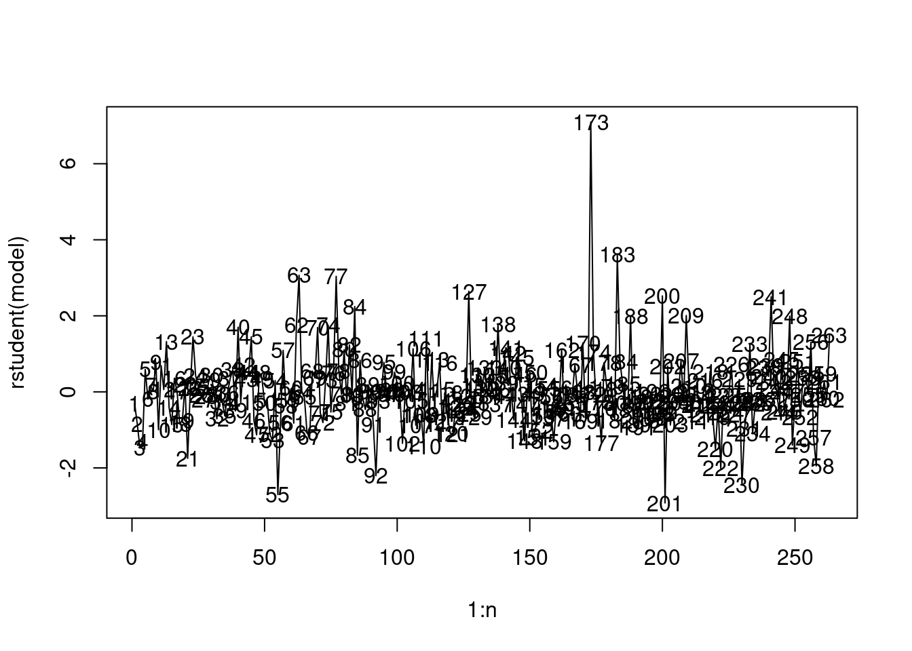
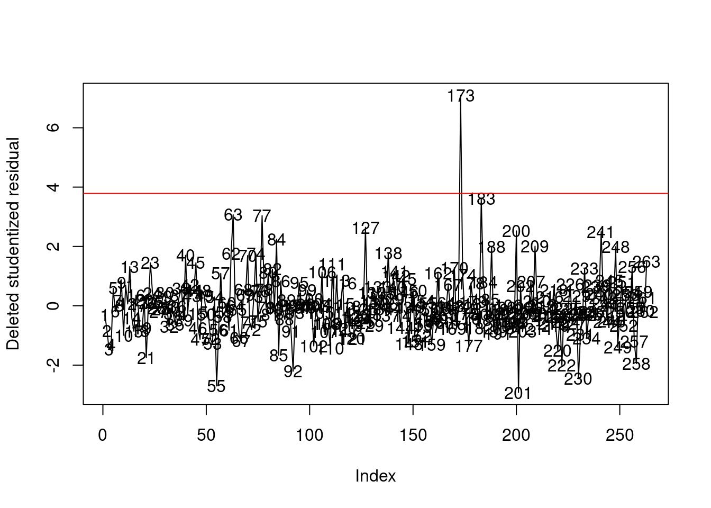
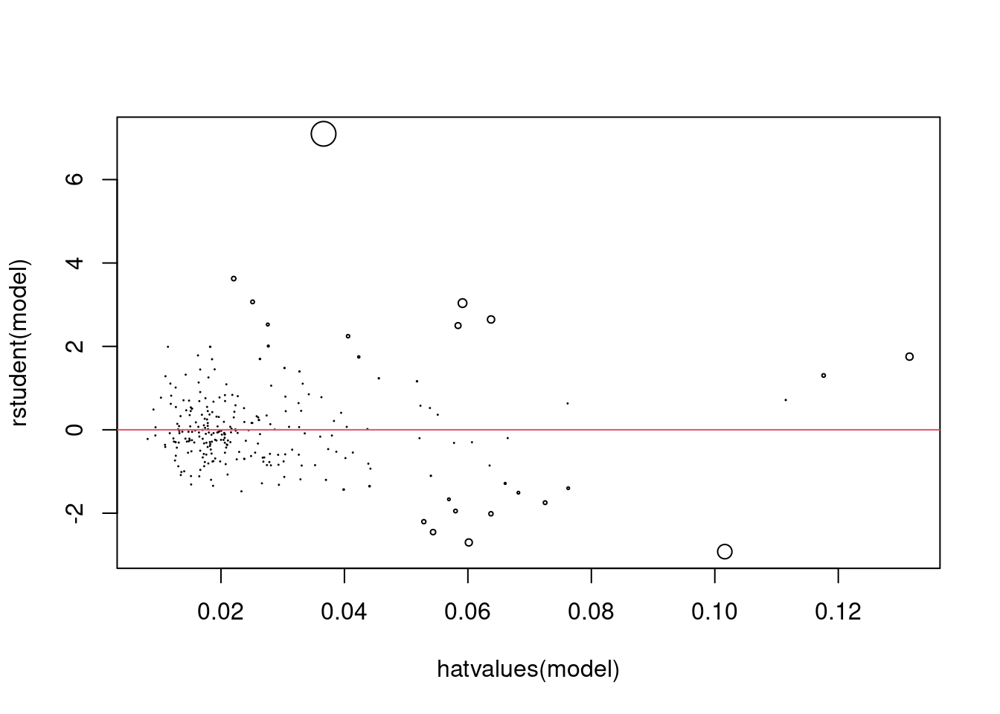
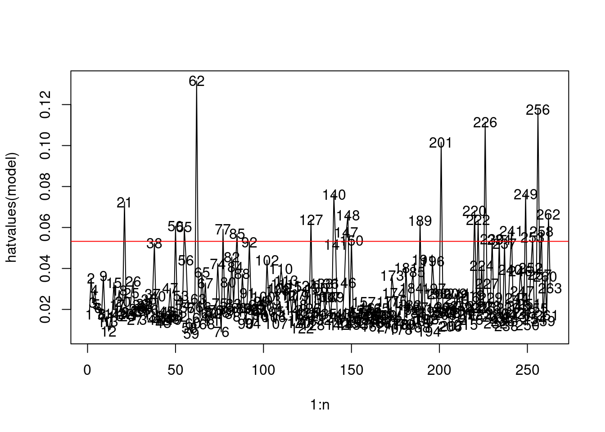
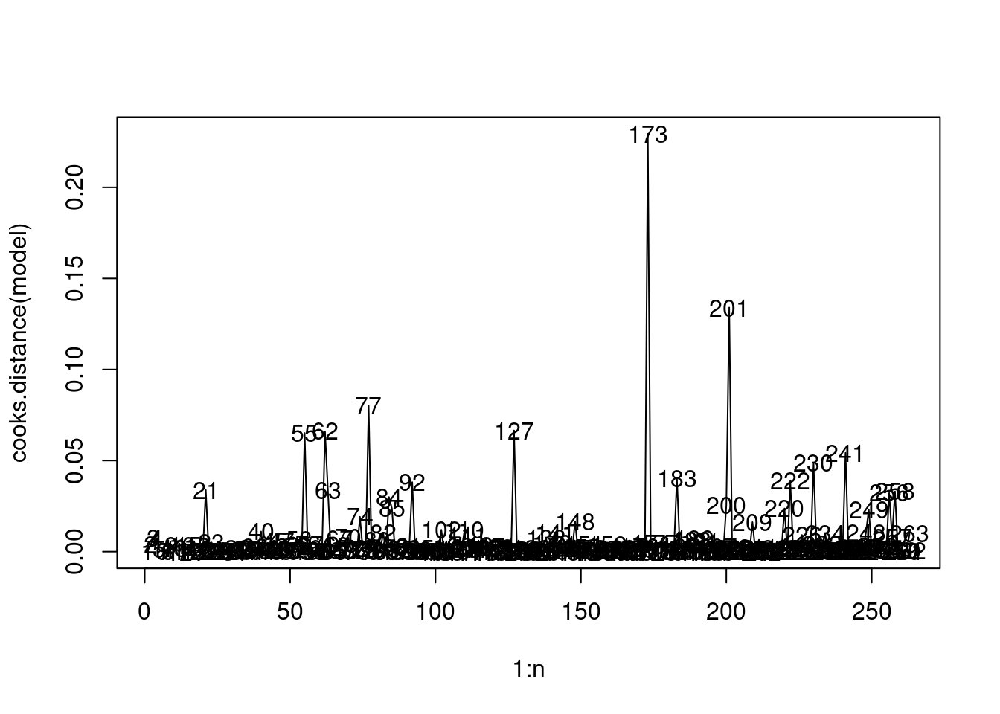
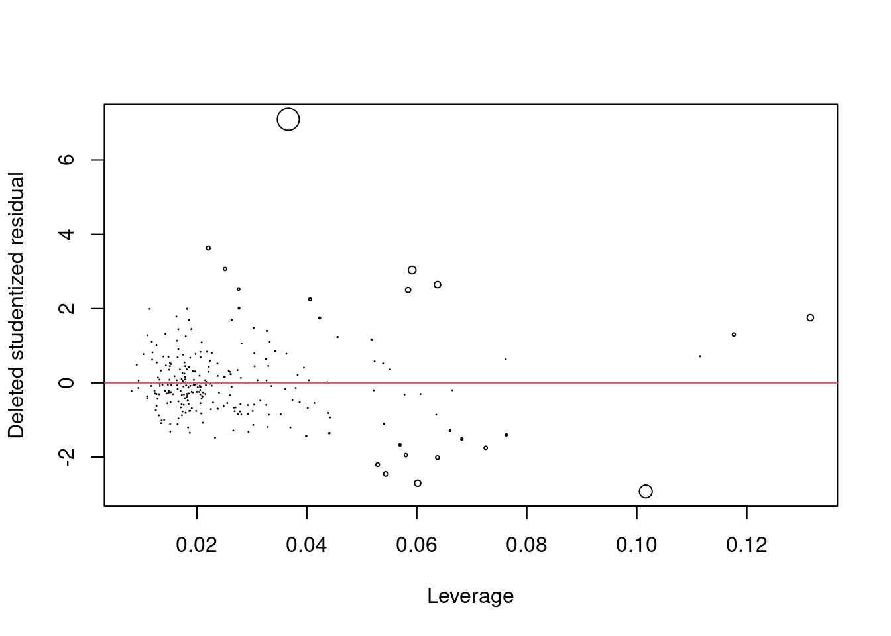
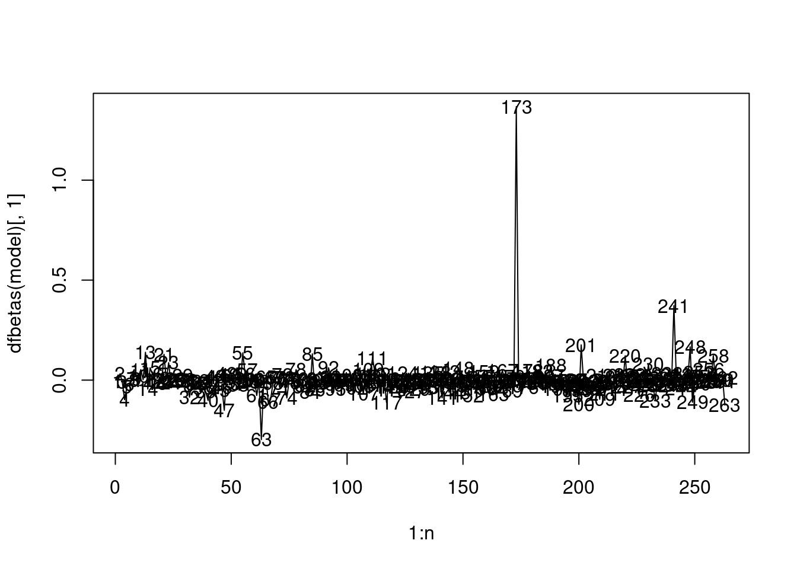
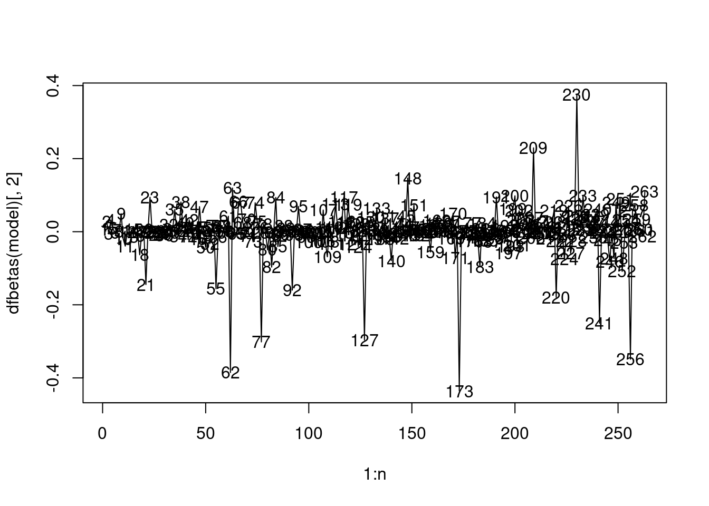

# Importing libraries
rm(list=ls())
library(ISLR)
library(leaps)
library(car)9 Outliers, High leverage and Influential Points
Let us again consider the Hitters dataset to identify outliers, high leverage, and influential points. Recall the meaning of these terms:
1. Outliers: These are outlying observations with respect to the response (\(Y\)). If there is a relatively large gap between the prediction and the observed response, the observation may be an outlier. Or, in other words, observations that correspond to large residuals are likely to be outliers.
2. High Leverage points: These are outlying observations with respect to the predictors (\(X\)). If there is a relatively large gap between an observation and the center of the rest of the observations in terms of predictor values, then the observation has a high leverage in influencing the regression function. However, it may or may not influence it. It will influence it only if the observation is an outlier as well, i.e., outlying observation with respect to the response (\(Y\)) as well.
3. Influential points: Observations that are both outliers and having high leverage tend to influence the regression function. Such observations should be analyzed, and a decision should be made whether they should be included in model fitting or not. If they appear to be incorrect, then they may be discarded.
We will read the Hitters dataset, and use the best model based on the \(BIC\) criterion as identified in the previous chapter.
# Reading data
data = Hitters
# Removing missing values
data <- data[complete.cases(data),]
# Identifying the predictors of the best model based on on the BIC criterion
regfit.full <- regsubsets(Salary ~ ., data = Hitters,
nvmax = 19)
reg.summary <- summary(regfit.full)
coef(regfit.full, which.min(reg.summary$bic)) (Intercept) AtBat Hits Walks CRBI DivisionW
91.5117981 -1.8685892 7.6043976 3.6976468 0.6430169 -122.9515338
PutOuts
0.2643076 Let us fit the best model based on the above predictors.
# Fitting the best model
model <- lm(Salary~AtBat+Hits+Walks+CRBI+Division+PutOuts, data = data)9.1 Outliers
Let us visualize the deleted studentized residuals to identify outliers.
# Number of observations
n = nrow(data)
# Number of predictors
p = 7 # including the intercept# Studentized deleted residuals
plot(1:n, rstudent(model), type = "l")
text(1:n, rstudent(model))
We’ll use the Bonferroni test to identify the value of the studentized deleted residual over which an observation will be considered an outlier
# Critical value for the residual to be identified as an outlier
alpha <- 0.05
crit <- qt(1-alpha/2/n, n-p-1) #Bonferroni
which(abs(rstudent(model)) >=crit )-Mike Schmidt
173 We have only one outlying observation, which is the \(173rd\) observation in the data (also shown below).
# Outliers
plot(1:n, rstudent(model), type = "l",
ylab = "Deleted studentized residual", xlab = "Index")
text(1:n, rstudent(model))
abline(h=crit, col = 'red')
Let us analyze this observation.
data[173,] AtBat Hits HmRun Runs RBI Walks Years CAtBat CHits CHmRun CRuns
-Mike Schmidt 20 1 0 0 0 0 2 41 9 2 6
CRBI CWalks League Division PutOuts Assists Errors Salary
-Mike Schmidt 7 4 N E 78 220 6 2127.333
NewLeague
-Mike Schmidt NThis observation is for Mike Schmidt whose salary is $2127. However, his predicted salary based on the model is $87 (shown below):
predict(model, newdata = data[173,])-Mike Schmidt
86.86152 The observation is an outlier because players similar to Mike Schmidt, in terms of AtBat, Hits, Walks, CRBI, Division, and PutOuts have a low salary. Let us see the salary of players similar to Mike Schmidt.
std_data <- data[,c('AtBat','Hits','Walks','CRBI','PutOuts')]
std_data <- (std_data-apply(std_data,2,mean))/apply(std_data,2,sd)
distance <- sqrt(apply(((std_data[rep(173,n),c('AtBat','Hits','Walks','CRBI','PutOuts')] - std_data[,c('AtBat','Hits','Walks','CRBI','PutOuts')])^2),1,sum))
data_distance <- cbind(data, distance, predicted_salary=model$fitted.values)
data_distance[order(by = distance),][1:5,c('AtBat','Hits','Walks','CRBI','PutOuts','Salary','predicted_salary')] AtBat Hits Walks CRBI PutOuts Salary predicted_salary
-Mike Schmidt 20 1 0 7 78 2127.333 86.86152
-Bruce Bochy 127 32 14 82 202 135.000 132.47474
-Dale Sveum 317 78 32 35 45 70.000 245.03616
-Curt Ford 214 53 23 32 109 70.000 229.09872
-Kurt Stillwell 279 64 30 26 107 75.000 89.83407We can see salary of players having the most similar statistics to Mike Schmidt is much lower than him.
Let us see the players for which the predicted salary is more than $1500
cbind(data[model$fitted.values>1500,c('AtBat','Hits','Walks','CRBI','PutOuts','Salary')],predicted_salary = model$fitted.values[model$fitted.values>1500]) AtBat Hits Walks CRBI PutOuts Salary predicted_salary
-Eddie Murray 495 151 78 1015 1045 2460.0 1532.104
-Jim Rice 618 200 62 1289 330 2412.5 1602.928
-Keith Hernandez 551 171 94 900 1199 1800.0 1605.470Note that these players have statistics much different than Mike Schmidt. Thus, Mike Schmidt is an outlier with respect to the response.
Note the model coefficients to see the effect of statistics on predicted salary.
model$coefficients (Intercept) AtBat Hits Walks CRBI DivisionW
91.5117981 -1.8685892 7.6043976 3.6976468 0.6430169 -122.9515338
PutOuts
0.2643076 The outlying observation can also be seen clearly if we plot the fitted values against salary.
plot(data$Salary, model$fitted.values, col = 'orange', pch = 16, main = "Fitted vs true values")
points(data$Salary[173], model$fitted.values[173], col = 'red', pch = 19)
text(data$Salary[173], model$fitted.values[173], "Mike Schmidt", pos = 3)
abline(0,1, col = 'blue')
9.2 Leverage
Let us visualize the leverage of all observations.
# Leverage
plot(1:n, hatvalues(model), type = "l")
text(1:n, hatvalues(model))
# Average leverage
p/n[1] 0.02661597Observations whose leverage is more than twice as large as the mean leverage can be considered as high leverage.
sum(hatvalues(model)>2*p/n)[1] 24We have 24 observations that can be considered to have a high leverage (visualized below).
# High leverage
plot(1:n, hatvalues(model), type = "l")
text(1:n, hatvalues(model))
abline(h=2*p/n, col = 'red')
9.3 Influential observations
Observations that have a high leverage and are outliers are influential. The degree of influence depends on the leverage and the magnitude of the residual.
9.3.1 Cook’s distance
Let us visualize influential observations based on Cook’s distance.
plot(1:n, cooks.distance(model), type = "l")
text(1:n, cooks.distance(model))
If Cook’s distance for an observation is at 50th or higher percentile of \(F(p,n-p)\) distribution, then the observation is highly influential, while if it is less than 20th percentile, then it is not influential.
#50th percentile value of F(p,n-p) distribution
qf(0.5, 7, n-7)[1] 0.9089314#20th percentile value of F(p,n-p) distribution
qf(0.2, 7, n-7)[1] 0.5448048As the highest Cook’s distance in our observations is 0.2, we don’t have any influential observations. However, the 173rd observation is relatively more influential than the rest.
As the influence of an observation depends on its residual, and leverage, a plot of residual against leverage also indicates influence of observations. In the plot below, the size of the points is proportional to the influence.
plot(hatvalues(model), rstudent(model), cex = 10*cooks.distance(model), ylab = "Deleted studentized residual", xlab = "Leverage")
abline(h=0,col=2)
We can see that the observation with the deleted studentized residual of more than 6 is the most influential. Let us compare the model fit with and without this observation.
model_minus173 <- lm(Salary~AtBat+Hits+Walks+CRBI+Division+PutOuts, data = data[-173,])# Original model
summary(model)$r.squared[1] 0.5087146summary(model)$adj.r.squared[1] 0.4972001# Model after removing the 173rd observation
summary(model_minus173)$r.squared[1] 0.569231summary(model_minus173)$adj.r.squared[1] 0.5590953As expected, the model fit does seem to improve if we remove the outlier, as the outlier corresponds to a high prediction error, and thereby a high unexplained variation.
However, as the 173rd observations is not influential, the regression function should not change substantially. Let us compute the average percentage change in fitted values if we fit the model without the 173rd observation.
# fitted values using all observations
pred_all <- model$fitted.values
# fitted values using all but the 173rd observation
pred_all_minus173 <- model_minus173$fitted.values
mean(abs((pred_all_minus173-pred_all[-173])/pred_all[-173]*100))[1] 6.999187The average change in predictions is 7%, if the 173rd observation is removed.
9.3.2 DFFITS
Let us visualize the influence of an observation on the prediction for that observation.
plot(1:n, dffits(model), type="l")
text(1:n, dffits(model))
For the 173rd observation, \(DFFITS\) is more than one indicating a large influence on the prediction (or fitted value) for that observation.
# Prediction on the 173rd observation with model fitted on all data
predict(model, newdata = data[173,])-Mike Schmidt
86.86152 # Prediction on the 173rd observation with model fitted on all data except the 173rd observation
predict(model_minus173, newdata = data[173,])-Mike Schmidt
9.292043 The change in the predicted value is 89% if the 173rd observation is removed from the data. Although the 173rd observation doesn’t have a high influence overall, it does have a high influence on prediction at the point itself.
9.3.3 DFBETAS
Let us observe the influence of each observation on the regression coefficients.
Influence on the intercept:
# Intercept is the 1st predictor
plot(1:n, dfbetas(model)[,1], type="l")
text(1:n, dfbetas(model)[,1])
As DFBETAS for the 173rd observation is greater than one, the observation has a high influence on the intercept term
model$coefficients (Intercept) AtBat Hits Walks CRBI DivisionW
91.5117981 -1.8685892 7.6043976 3.6976468 0.6430169 -122.9515338
PutOuts
0.2643076 model_minus173$coefficients (Intercept) AtBat Hits Walks CRBI DivisionW
10.1309202 -1.6581831 7.3335069 3.8350690 0.6530299 -104.5410980
PutOuts
0.2617957 The intercept changes by 89% from $91 to $10 when the 173rd observation is removed.
Influence on the AtBat:
# AtBat is the 2nd predictor
plot(1:n, dfbetas(model)[,2], type="l")
text(1:n, dfbetas(model)[,2])
None of the observations have a high influence on the coefficient of AtBat.
Similary, we can visualize the influence of observations on all the regression coefficients.